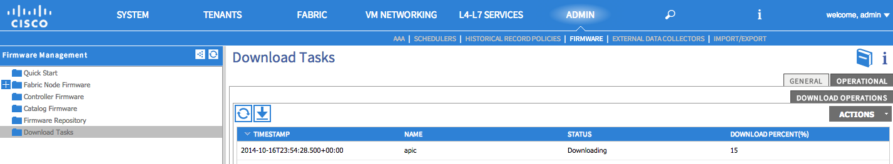
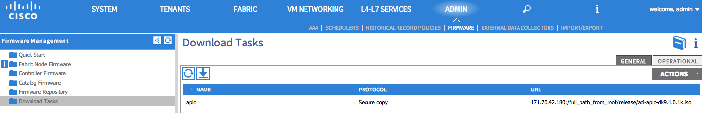

Firmware and Image Management¶
Overview¶
This chapter covers firmware and image management for the ACI fabric hardware components. It will cover the overview of objects and policies that make up firmware and image management in the context of software upgrades, followed by the verification steps used to confirm a successful upgrade process.
APIC Controller and Switch Software¶
There are three types of software images in the fabric that can be upgraded:
- The APIC software image.
- The switch software image — software running on leafs and spines of the ACI fabric.
- The Catalog image — the catalog contains information about the capabilities of different models of hardware supported in the fabric, compatibility across different versions of software, and hardware and diagnostic utilities. The Catalog image is implicitly upgraded with the controller image. Occasionally, it may be required to upgrade the Catalog image only to include newly qualified hardware components into the fabric or add new diagnostic utilities.
You must upgrade the switch software image for all the spine and leaf switches in the fabric first. After that upgrade is successfully completed, upgrade the APIC controller software image.
Firmware Management¶
There are five components within the context of firmware management:
- Firmware Repository is used to store of images that have been downloaded to the APIC. Images are transferred into the firmware repository from external source locations over HTTP or SCP protocols. The source locations are configurable via the firmware source policy. Once an image has been copied from its source location, it is replicated across all controllers within the cluster. The switch nodes will retrieve images from the controller as required during the beginning of the upgrade process.
- Firmware Policy is the policy which specifies the desired firmware image version.
- Firmware Group is the configured group of nodes that share the same firmware policy.
- Maintenance Policy is the maintenance policy which specifies a schedule for upgrade.
- Maintenance Group is the group of nodes that share the same maintenance policy.
By default, all controllers are part of a predefined firmware group and a predefined maintenance group. Membership within the firmware and maintenance groups is not modifiable. However, both the controller firmware policy and the controller maintenance policy are modifiable to select a desired version to upgrade to.
Before the administrator can upgrade switches, a firmware group must be created for all the switches and and one or more maintenance groups should be created to contain all the switches within the ACI fabric.
Compatibility Check¶
The ACI fabric can have up to 3 different versions of compatible switch software images to be simultaneously active in a fabric. There are three different levels of “compatibility” checks:
- Image level compatibility - Controllers use the Catalog image to check for compatibility across software images that can interoperate in the fabric. The controller will ensure image compatibility is satisfied before allowing for upgrade and downgrade.
- Card level compatibility - Within a spine modular chassis, the supervisor software must be compatible with line card, fabric card and system controller software. Similarly all the connected FEXes within the leaf switch must be compatible with software running in the leaf. If a card or a FEX connected to the system contains incompatible software with the supervisor module of a spine or a leaf, the supervisor module of the spine or the leaf will ensure compatibility by pushing down a compatible version of card or FEX software.
- Feature level compatibility - Given a set of disparate image versions running in the fabric, these images may have image level compatibility and can be simultaneously available within the fabric. However, they may not support the same set of software features. As a result, feature and hardware level compatibility is encoded in the object model such that the controller can identify feature incompatibility at the point of configuration by administrator. Administrator will be prompted or configuration will result in failure when enabling such features in a mixed hardware and software version environment.
Firmware Upgrade Verification¶
Once a controller image is upgraded, it will disconnect itself from the cluster and reboots with the newer version while the other APIC controllers in the cluster are still operational. Once the controller is rebooted, it joins the cluster again. Then the cluster converges, and the next controller image will start the upgrade process. If the cluster does not immediately converge and is not fully fit, the upgrade will wait until the cluster converges and is “Fully Fit”. During this period, a Waiting for Cluster Convergence message is displayed.
For the switches, the administrator can also verify that the switches in the fabric have been upgraded from the APIC GUI navigation pane, by clicking Fabric Node Firmware. In the Work pane, view all the switches listed. In the Current Firmware column view the upgrade image details listed against each switch.
{kind=link}
Verifying the Firmware Version and the Upgrade Status by of use of the REST API¶
For the upgrade status of controllers and switches. An administrator can query the upgrade status with the following URL:
https://<ip address>/api/node/class/maintUpgJob.xml
An administrator can query the current running firmware version on controllers:
https://<ip address>/api/node/class/firmwareCtrlrRunning.xml
An administrator can also query the currently operating firmware version on switches:
https://<ip address>/api/node/class/firmwareRunning.xml
Problem Description¶
Failing to copy firmware files to APIC through a download task
Symptom¶
After configuring an APIC download task policy, the download keeps failing and will not download the firmware from the home directory of the user.
{kind=link}
{kind=link}
Resolution¶
Since the APIC is using standard Linux distribution, the SCP command needs to follow the standard Linux SCP format. For example, if the IP address is 171.70.42.180 and the absolute path is /full_path_from_root/release/image_name. The following illustrations show the successful download of the APIC software via SCP.
{kind=link}
Problem Description¶
The APIC cluster fails to upgrade.
Verification¶
When upgrading Controllers, the Controller Upgrade Firmware Policy will not proceed unless the APIC Cluster has a status “Fully Fit”. The upgrade status may show “Waiting for Cluster Convergence” and will not proceed with upgrade.
This “Waiting for Cluster Convergence” status can be caused due to a policy or process that has crashed. If the cluster is not in a “Fully Fit” state, check the list of running processes for each APIC, for example evidence of such a problem would be the presence of core dump files in a Controller.
Resolution¶
While the administrator can recover the APIC from the “Waiting for Cluster Convergence” state by restarting the affected APIC to allow all processes to start up normally, in the presence of core dump files the Cisco Technical Assistance Center should be contacted immediately to analyze and troubleshoot further.
Problem Description¶
Policy upgrade is paused.
Verification¶
The administrator can verify the fault to see if there is a fault code F1432 - Maintenance scheduler is paused for group policyName. One or more members of the group failed to upgrade or the user manually paused the scheduler being generated.
Resolution¶
The administrator should look for other faults indicating why the upgrade failed. Once all the faults are resolved, the administrator can delete failed/paused policy and re-initiate a new policy upgrade.